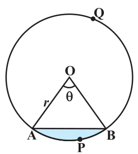
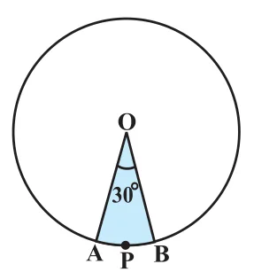

AREAS RELATED TO CIRCLES

You have already come across the terms sector and segment of a circle in your earlier classes. Recall that the portion (or part) of the circular region enclosed by two radii and the corresponding arc is called a sector of the circle and the portion (or part) of the circular region enclosed between a chord and the corresponding arc is called a segment of the circle. Thus, in Fig. 11.1, shaded region OAPB is a sector of the circle with centre O. \(\angle \text{AOB}\) is called the angle of the sector. Note that in this figure, unshaded region OAQB is also a sector of the circle. For obvious reasons, OAPB is called the minor sector and OAQB is called the major sector. You can also see that angle of the major sector is \(360^{\circ} - \angle \text{AOB}\).

Now, look at Fig. 11.2 in which AB is a chord of the circle with centre O. So, shaded region APB is a segment of the circle. You can also note that unshaded region AQB is another segment of the circle formed by the chord AB. For obvious reasons, APB is called the minor segment and AQB is called the major segment.
Remark : When we write ‘segment’ and ‘sector’ we will mean the ‘minor segment’ and the ‘minor sector’ respectively, unless stated otherwise.
Now with this knowledge, let us try to find some relations (or formulae) to calculate their areas.

Let OAPB be a sector of a circle with centre O and radius \(r\) (see Fig. 11.3). Let the degree measure of \(\angle \text{AOB}\) be \(\theta\).
You know that area of a circle (in fact of a circular region or disc) is \(\pi r^{2}\).
In a way, we can consider this circular region to be a sector forming an angle of \(360^{\circ}\) (i.e., of degree measure 360) at the centre O. Now by applying the Unitary Method, we can arrive at the area of the sector OAPB as follows:
When degree measure of the angle at the centre is 360, area of the sector \(= \pi r^{2}\)
So, when the degree measure of the angle at the centre is 1, area of the sector \(= \dfrac{\pi r^{2}}{360}\).
Therefore, when the degree measure of the angle at the centre is \(\theta\), area of the
\( \text{sector} = \dfrac{\pi r^{2}}{360} \times \theta = \dfrac{\theta}{360} \times \pi r^{2}. \)
Thus, we obtain the following relation (or formula) for area of a sector of a circle:
\( \textbf{Area of the sector of angle } \boldsymbol{\theta} = \dfrac{\boldsymbol{\theta}}{\mathbf{360}} \times \boldsymbol{\pi r^{2}}, \)
where \(r\) is the radius of the circle and \(\theta\) the angle of the sector in degrees.

Now, a natural question arises : Can we find the length of the arc APB corresponding to this sector? Yes. Again, by applying the Unitary Method and taking the whole length of the circle (of angle \(360^{\circ}\)) as \(2\pi r\), we can obtain the required length of the arc APB as \(\dfrac{\theta}{360} \times 2\pi r\).
So, length of an arc of a sector of angle \(\boldsymbol{\theta} = \dfrac{\boldsymbol{\theta}}{\mathbf{360}} \times \mathbf{2}\boldsymbol{\pi r}\).
Now let us take the case of the area of the segment APB of a circle with centre O and radius \(r\) (see Fig. 11.4). You can see that :
\( \text{Area of the segment APB} = \text{Area of the sector OAPB} - \text{Area of } \triangle \text{OAB} \)
\( = \dfrac{\theta}{360} \times \pi r^{2} - \text{area of } \triangle \text{OAB} \)
Note : From Fig. 11.3 and Fig. 11.4 respectively, you can observe that:
\( \text{Area of the major sector OAQB} = \pi r^{2} - \text{Area of the minor sector OAPB} \)
and
\( \text{Area of major segment AQB} = \pi r^{2} - \text{Area of the minor segment APB} \)
Let us now take some examples to understand these concepts (or results).
Example 1 :
Find the area of the sector of a circle with radius 4 cm and of angle \(30^{\circ}\). Also, find the area of the corresponding major sector (Use \(\pi = 3.14\)).

Solution :
Given sector is OAPB (see Fig. 11.5).
\( \text{Area of the sector} = \dfrac{\theta}{360} \times \pi r^{2} \)
\( = \dfrac{30}{360} \times 3.14 \times 4 \times 4\ \text{cm}^{2} \)
\( = \dfrac{12.56}{3}\ \text{cm}^{2} = 4.19\ \text{cm}^{2}\ \text{(approx.)} \)
Area of the corresponding major sector
\( = \pi r^{2} - \text{area of sector OAPB} \)
\( = (3.14 \times 16 - 4.19)\ \text{cm}^{2} \)
\( = 46.05\ \text{cm}^{2} = 46.1\ \text{cm}^{2}\ \text{(approx.)} \)
Alternatively, area of the major sector
\( = \dfrac{(360 - \theta)}{360} \times \pi r^{2} \)
\( = \left(\dfrac{360 - 30}{360}\right) \times 3.14 \times 16\ \text{cm}^{2} \)
\( = \dfrac{330}{360} \times 3.14 \times 16\ \text{cm}^{2} = 46.05\ \text{cm}^{2} \)
\( = 46.1\ \text{cm}^{2}\ \text{(approx.)} \)
Example 2 :
Find the area of the segment AYB shown in Fig. 11.6, if radius of the circle is 21 cm and \(\angle \text{AOB} = 120^{\circ}\). (Use \(\pi = \dfrac{22}{7}\))

Solution :
Area of the segment AYB
\( = \text{Area of sector OAYB} - \text{Area of } \triangle \text{OAB} \qquad (1) \)
Now, area of the sector OAYB
\( = \dfrac{120}{360} \times \dfrac{22}{7} \times 21 \times 21\ \text{cm}^{2} = 462\ \text{cm}^{2} \qquad (2) \)
For finding the area of \(\triangle \text{OAB}\), draw \(\text{OM} \perp \text{AB}\) as shown in Fig. 11.7.
Note that OA = OB. Therefore, by RHS congruence, \(\triangle \text{AMO} \cong \triangle \text{BMO}\).
So, M is the mid-point of AB and \(\angle \text{AOM} = \angle \text{BOM} = \dfrac{1}{2} \times 120^{\circ} = 60^{\circ}\).

Let OM = \(x\) cm
So, from \(\triangle \text{OMA}\),
\( \dfrac{\text{OM}}{\text{OA}} = \cos 60^{\circ} \)
\( \text{or,} \quad \dfrac{x}{21} = \dfrac{1}{2} \quad \left(\cos 60^{\circ} = \dfrac{1}{2}\right) \)
\( \text{or,} \quad x = \dfrac{21}{2} \)
\( \text{So,} \quad \text{OM} = \dfrac{21}{2}\ \text{cm} \)
\( \text{Also,} \quad \dfrac{\text{AM}}{\text{OA}} = \sin 60^{\circ} = \dfrac{\sqrt{3}}{2} \)
\( \text{So,} \quad \text{AM} = \dfrac{21\sqrt{3}}{2}\ \text{cm} \)
\( \text{Therefore,} \quad \text{AB} = 2\,\text{AM} = \dfrac{2 \times 21\sqrt{3}}{2}\ \text{cm} = 21\sqrt{3}\ \text{cm} \)
So, area of \(\triangle \text{OAB}\)
\( = \dfrac{1}{2}\,\text{AB} \times \text{OM} = \dfrac{1}{2} \times 21\sqrt{3} \times \dfrac{21}{2}\ \text{cm}^{2} \)
\( = \dfrac{441}{4}\sqrt{3}\ \text{cm}^{2} \qquad (3) \)
Therefore, area of the segment AYB
\( = \left(462 - \dfrac{441}{4}\sqrt{3}\right)\text{cm}^{2} \quad [\text{From (1), (2) and (3)}] \)
\( = \dfrac{21}{4}\left(88 - 21\sqrt{3}\right)\text{cm}^{2} \)